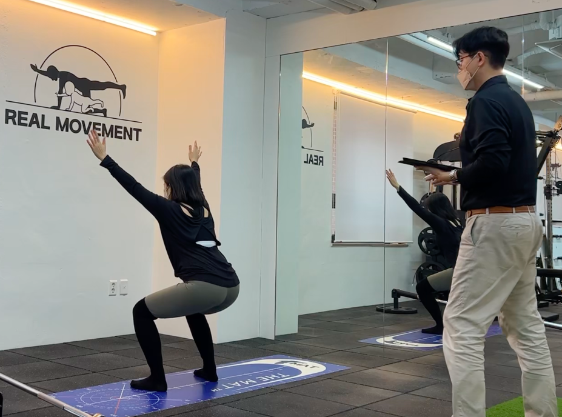

ABOUT
기능성 트레이닝 전문 스튜디오
Real Movement
운동량보다 움직임 질. 네 지점이 같은 질문을 합니다. “이 몸에는 지금 어떤 움직임이 필요한가.”
운동을 한다고 해서
모두가 편해지지는 않습니다
체형, 움직임 패턴, 근력은 사람마다 다릅니다. 그 차이를 무시한 채 같은 프로그램을 반복하면, 오히려 보상 패턴이 굳을 수 있습니다.
리얼무브먼트는 자세교정과 기능재활, 두 줄로 운영합니다. 필라테스형 안정화와 기능 트레이닝을 필요에 따라 연결합니다.

네 지점이 같은 기준을 씁니다
성수본점 · 역삼한티점본사 강사진이 1:1을 진행합니다. 평가 장비를 활용할 수 있습니다.
약수점 · 인천점같은 평가 흐름으로 1:1 리:얼 움직임을 진행합니다.
공통원인 평가 → 맞춤 프로그램 → 재확인. 의료 행위가 아닌 운동·웰니스 프로그램입니다.